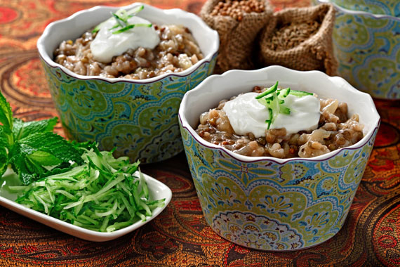

Lentils of Arabia

Ingredients
- 1/2 cup brown French lentils
- 1/2 cup long grain white rice
- 5 cups water 1.25 L
- 2 Tbsp ground coriander seeds 30 mL
- 1 Tbsp ground cumin seeds 15 mL
- 1/4 cup canola oil 60 mL
- 2 large yellow onions, cut in half lengthwise and thinly sliced
- 1 tsp coarse sea or kosher salt 5 mL
Instructions
- In medium saucepan, add lentils and fill pan halfway with water. Rinse lentils by rubbing them between your fingertips. Water will become cloudy; drain it. Repeat three or four times, until water remains relatively clear then drain.
- Now add rice and 5 cups (1.25 L) water. Bring water to boil over medium-high heat. Skim off and discard any foam that may form on surface. Stir in coriander and cumin. Lower heat to low and simmer, covered, stirring occasionally, until rice and lentils are soft and creamy in texture, similar to cooked risotto, 45 minutes to 1 hour.
- While grains cook, in large skillet or wok (preferred), heat canola oil over medium heat. Once oil appears to shimmer, add onion and stir-fry until it turns deep caramel brown in color, 25 to 30 minutes.
- Once lentils and rice are cooked and porridge-like in consistency, stir in onionalong with salt and serve warm.
Cook’s Tip: For a more colorful presentation, serve this stew alongside a platter of fresh cut vegetables like cucumbers, tomatoes, raw red onions and wedges of lime. Like it hot? A few sliced chiles are a welcome addition. Or try a simple dollop of spiced, thickened yogurt. Sprinkle in some fresh mint and shred a handful of cucumbers for textural contrast.